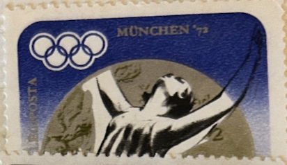
| SOURCE | TITLE| IMAGE MATCH | click to source page |
| Dreamstime.com | Silver Medalist Andrea Gyarmati, Hungarian Swimmer, Summer Olympics 1972, Munich Editorial Photography - Image of competition, historic: 121508097 | 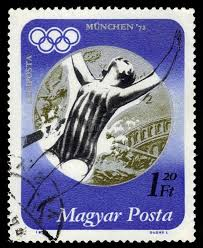 |
| Kyriakos Athanasiou (kathanasiou) - Perfil | Pinterest | 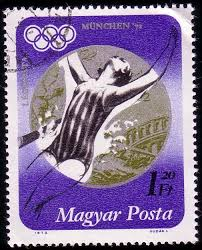 | |
| Dreamstime.com | Munich Honour Stock Photos - Free & Royalty-Free Stock Photos from Dreamstime | 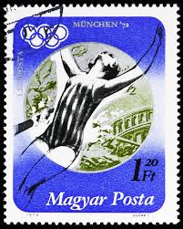 |
| Shutterstock | Munich Stamp: Over 1,861 Royalty-Free Licensable Stock Photos | Shutterstock | 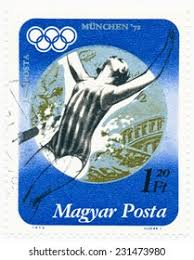 |
| Find Your Stamps Value | Olympic Rings and Gymnastics, women's 1.55l violet, gold & olive stamp price, value | 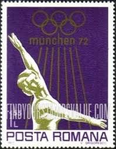 |
| Etsy | Munich 1972 Olympic Stamp Set Booklet German Olympia Stamps 1968 - 1972 Rare Collector's Issue Mint Condition XX Olympiade Muenchen 1972 - Etsy | 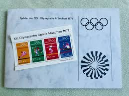 |
| Stamps By Themes | France International Sale - 64 Page 179 | 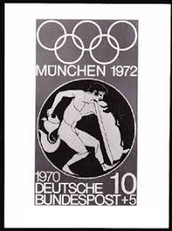 |
| eBay | 1948 Olympic Pin for sale | eBay | 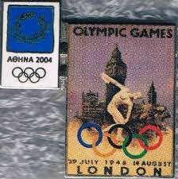 |
| eBay | DDR 1988 Numisbrief 4 Olympische Spiele top (B07859) | eBay | 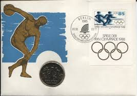 |
| eBay | Olympics German & Colonies Postage Stamps for sale | eBay | 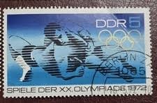 |
| Alamy | Yemen circa 1972 stamp printed hi-res stock photography and images - Alamy | 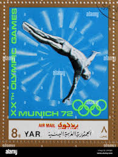 |
| Free stamp catalogue | Stamps from Germany, DDR with the theme Olympic Games - Freestampcatalogue.com - The free online stampcatalogue with over 500.000 stamps listed. | 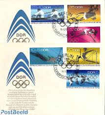 |
| Find Your Stamps Value | Value of munich olympic games 1972 stamps | 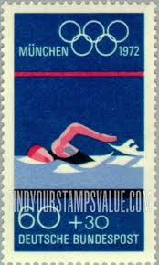 |
| eBay | 1988, Berlin, 1988, ** - 1801287 | eBay | 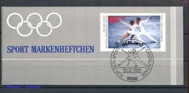 |
| rowing-memorabilia.de | Stamps by Year - 1972 | 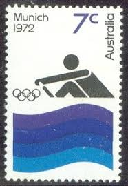 |
| PICRYL | Stamp 1989 GDR MiNr3271 pm B002 - PICRYL - Public Domain Media Search Engine Public Domain Search | 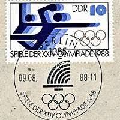 |
| Alamy | Olympic Games, Munich 1972 Wrestling: Freestyle: Adolf Seger (FRG) with medals, among them in the middle the bronze medal of the Olympic tournament. 31.12.1972. [automated translation] Stock Photo - Alamy | 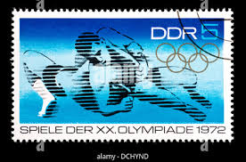 |
| eBay.de | DDR Block 94 I postfrisch Plattenfehler - b9825 | eBay.de | 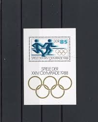 |
| www.saeedalqahtani.com | Stamps olympic -mint- Stamps | 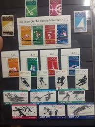 |
| Find Your Stamps Value | Value of olympics munchen 1972 20b posta romana stamps | 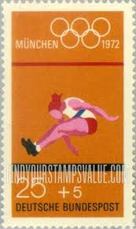 |
| GetArchive | 13 1988 Olympics Stamps Of The German Democratic Republic Image: PICRYL - Public Domain Media Search Engine Public Domain Search} | 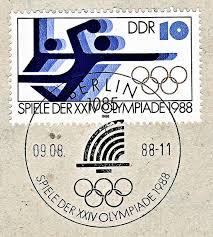 |
| GetArchive | Stamp 1988 GDR MiNr3141 pm B002a - PICRYL - Public Domain Media Search Engine Public Domain Image | 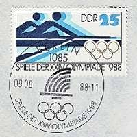 |
| GetArchive | Paleolithic Bear Skull (30183573875) - PICRYL - Public Domain Media Search Engine Public Domain Image | 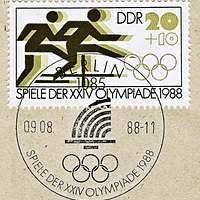 |
| eBay | Olympics German & Colonies 1981-1990 Year of Issue Stamps for sale | eBay | 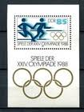 |
| Munich 72 | Postage stamp art, Stamp design, Design stamps | 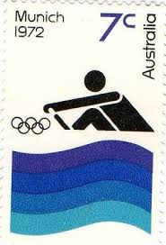 | |
| eBay | DDR 1988-Short Year of 4 SS MNH 1 Sheet of 4 MNH, Block of 4 MNH, 17 Stamps Used | eBay | 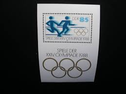 |
| Any idea on the value of these unopened 1952 Olympics trading cards? : r/olympics | 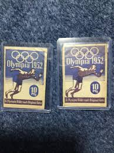 | |
| Amazon.com | Seguro 930 seguro pestañas 30 mm. Schwarz : Juguetes y Juegos - Amazon.com | 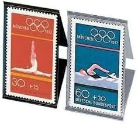 |
| French revenue stamp designed by Oudine | 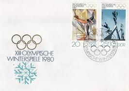 | |
| Todocolección | yemen - rep. arabe. 235 + aéreos jj. oo. munich - Buy Stamps about the Olympic Games on todocoleccion | 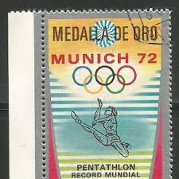 |
| Soviet union world spartakiad stamp series | 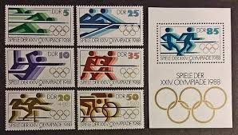 | |
| schuf.de | Topical Four Volume Of 1972 Munich Olympics Stamp Catalogs ~1000 Stamps Pahlavi Shah Era Iran | 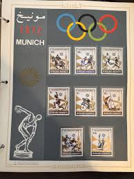 |
| Bridgeman Images | Image of CATRIONA LEMAY DOAN SMILES WITH GOLD MEDAL, 2001-03-09 (photo) | 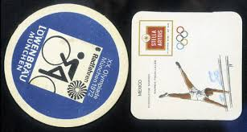 |
| GetArchive | 23 Relay Race Athletics Image: PICRYL - Public Domain Media Search Engine Public Domain Search} | 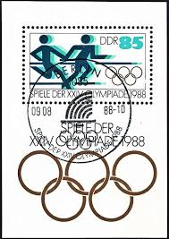 |
| Old-Stamps.com | Mariazell / Republik Österreich 1960 | 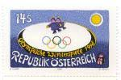 |
| eBay | Germany 1972 Olympic First Day Cover Unit Scott# B475a, B489, B490 Set of Three | eBay |  |
| Find Your Stamps Value | Value of Russia Olympic 1972 stamps | 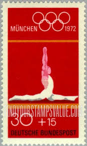 |
| GetArchive | 46 1969 deutsche bundespost stamps Images: PICRYL - Public Domain Media Search Engine Public Domain Search | 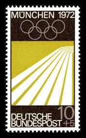 |
| eBay | Sailing German Olympics Postal Stamps for sale | eBay | 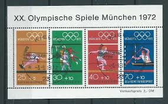 |
| HipPostcard | Search "FIGURE SKATING" / HipPostcard | 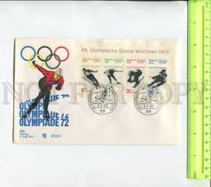 |
| eBay | GERMANY DEUTSCHE BUNDESPOST 1972 Olympic Games - Munich, Germany - USED/CTO | eBay | 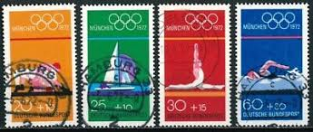 |
| eBay | Germany, BRD 1972, Olympic games Munich, FDC set (from booklet) + s sheet | eBay | 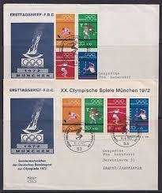 |
| Vintage Fangirl | Tag » postage stamps « @ Vintage Fangirl | 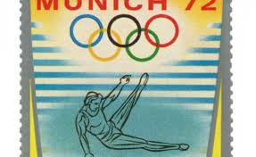 |
| International Journal of Physical Education, Fitness and Sports | Sport Funding Through Stamps: Finding Unlikely Revenue Streams | 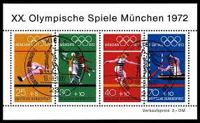 |
| eBay | Germany Olympic Games Munich 1972 cover Olympic Stamp Exhibition Kaiserlautern | eBay | 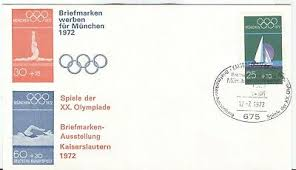 |
| eBay | GERMANY DDR COVER- STAMPS .. BERLIN OLYMPIC 1972 | eBay | 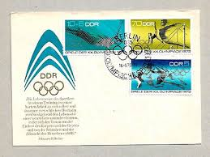 |
| postbeeld.com | Stamp 1988, Germany, DDR Olympic games Seoul s/s, 1988 - Collecting Stamps - PostBeeld - Online Stamp Shop - Collecting | 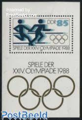 |
| mbeatpercussion.com | Topical Four Volume Of 1972 Munich Olympics Stamp Catalogs ~1000 Stamps Pahlavi Shah Era Iran | 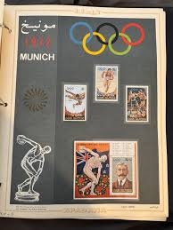 |
| eBay | Olympische Spiele München Mi. Bl.8 Stempel Eröffnungsfeier 1972 | eBay |  |
| eBay | W CHAD 0228Bv (1) MUNICH OLYMPIC | eBay | 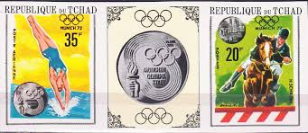 |
| Shutterstock | 4+ Thousand Olympic Message Royalty-Free Images, Stock Photos & Pictures | Shutterstock | 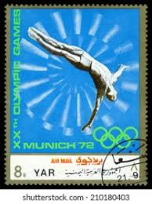 |
| eBay | Olympic Summer Games, Munich -IMPERFORATE- (MNH) | eBay | |
| eBay | BRD FRG #Mi886 MNH 1976 Freestyle Swimming [B530 YT736 SG1779] | eBay | |
| HipStamp | Equatorial Guinea Stamp:1972 Summer Olympic Games Munich'72-Cto-Stamp VF | Africa - Equatorial Guinea, Stamp / HipStamp | |
| Poppe Stamps | Poppe Stamps: German Federal Republic, 1969, 1496, Olympic Games, Funds, Boats And Ships - stamps for sale by theme and country | |
| thirdreichmovies.com | Olympia Part Two - Festival of Beauty (digital quality) - Third Reich Movies | |
| India International Centre | Olympia | India International Centre | |
| International Society of Olympic Historians – ISOH | A “New Woman” and her Involuntary Myth* - | |
| eBay | Germany Scott 475a Unaddressed. | eBay |